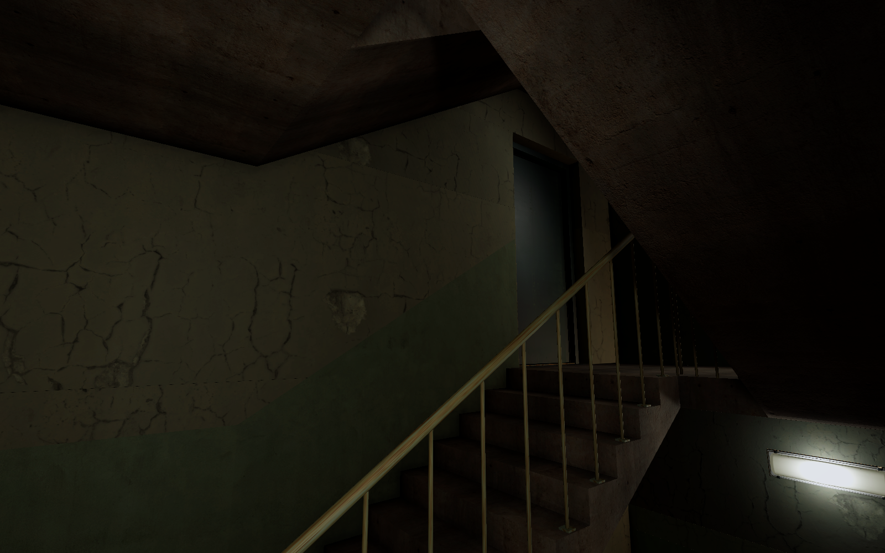
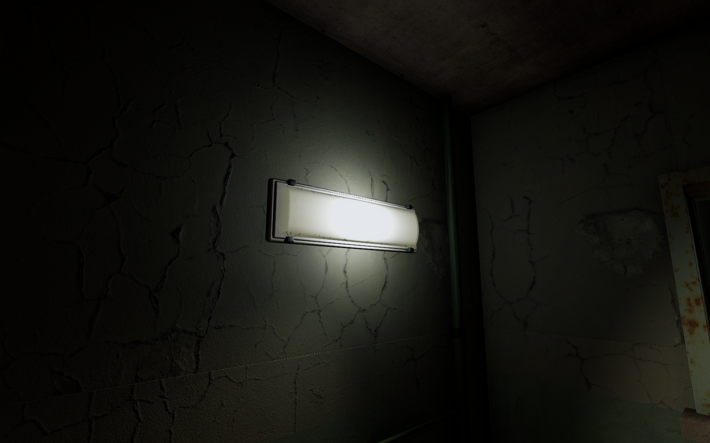
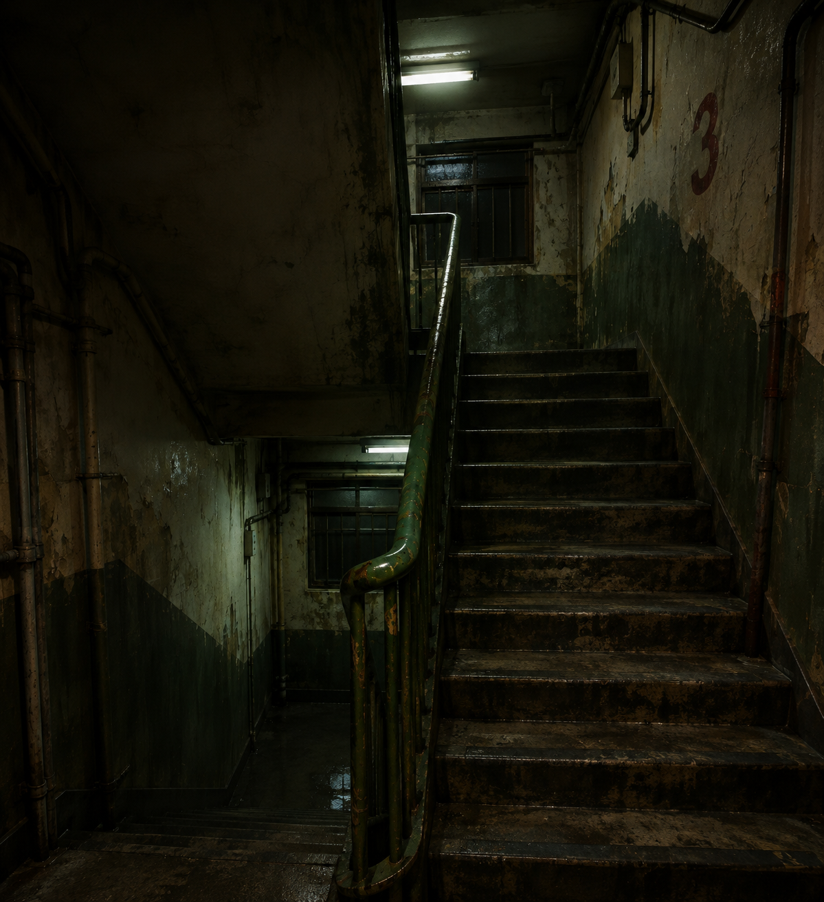
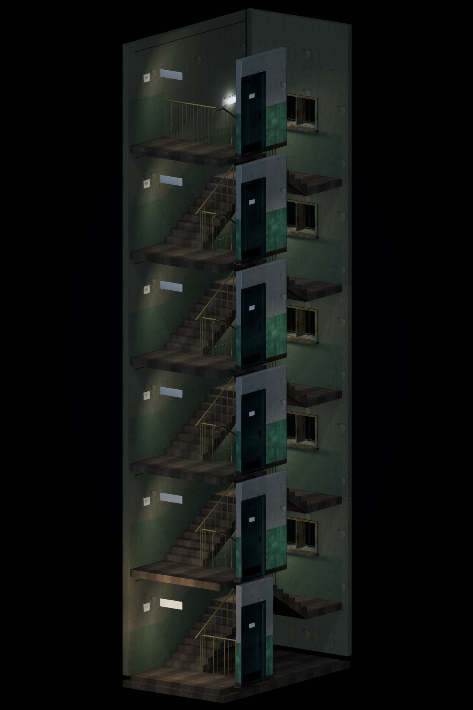

Ground-floor entrance. Access doors remain locked by default.Looking up: supported concrete flights, rails, sloped green paint and covered wall fixture.Looking down from the upper floor.

Intermediate landing.

Covered residential fluorescent mounted to the wall.Old fire door with separate leaf, frame and hardware.Top landing and physical floor sign.Raised upper landing window, existing neighborhood and distant landmark.
Height and frame corrections
One connected window/sill assembly; duplicate exterior frame layer removed.Stairwell window raised 32 cm, with matching real opening.Mirror raised 23 cm; backup bulkhead on the left wall and fan on the right wall, clear of its frame.Non-emissive aged floor plaque.Subdued pools of light from flush residential covered fittings.Surface wear constrained to its actual wall support.
Original concept comparison

Original visual reference supplied for the stairwell.Current Unity result: worn concrete, green rails/paint, old plaster, barred window and localized cold light. The footprint and six existing floor elevations are preserved. Smaller-scale edge wear can still be refined in later art passes.
Full structure

Inspection cutaway of all six levels. Two wall faces and the roof are temporarily hidden; a temporary review light makes the construction readable. Those visibility and lighting changes are restored and are not saved into the playable scene.